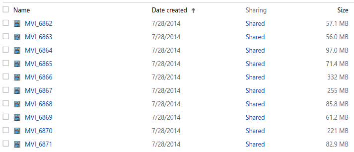

I've been spending more and more time working in, on, and around UNIX-based operating systems over the past two years or so, and, though I'm still quite a noob, I've have been working on making myself faster and better at using shells on Linux. I've recently adopted Zsh as my go-to shell for my personal/development machines.
If you've not yet tried Zsh, I'd highly recommend checking it out. People rave about it, and there's a wonderful tool called oh-my-zsh that makes installing/maintaining it a breeze.
Anyway, it's obvious that software developers use the shell for developer-y things. But what about 'normal people things'? I want to share an example of how even a rudimentary familiarity with some basic Linux command-line utilities can make some tasks much easier and faster.
Our wedding videographer (my brother-in-law) uploaded all 40GB of our wedding ceremony videos up on... Microsoft OneDrive. Blech.

There are nearly 300 video files in there... Fortunately, OneDrive does let you check multiple files to be compressed into a zip for download.
So, one might tick the checkboxes for all the files on the page, expecting that all of the files will be downloaded at once. They will be very disappointed to find, after having waiting for minutes to hours (depending on the speed of your Internet connection) that OneDrive will cut off the size of the zip file at 4GB. One might be rather annoyed. That one might be me.
So, I downloaded the files in chunks of 25 or so movies at a time. Painful, but not as painful as 1 at a time... especially since OneDrive will only let you have 4 HTTP download streams running simultaneously. The fun never ends with with the cloud.
Of course, once all the zips are finally done downloading, and I've extracted all the videos... I notice that at least one of the zip files had been larger than 4GB, which means that I didn't get all the videos for that batch. Ungh...
At that point I had two basic options. I could manually check/verify the ~265 files I had gotten with the ones shown in OneDrive in my browser to see which ones I was missing. The sequence numbers in the filenames are non-contiguous (even in OneDrive), making this option extra not-fun and error-prone. I don't know how long this would take, but it seemed like it'd take way too long.
Alternatively, I could try to use the tools I have at-hand to automatically solve this problem in a matter of minutes. Of course, that is what I did. Here's how. This should work in Bash or Zsh, by the way!
I need to know what files I should have. I want them saved in a file called
mvi_list.- OneDrive knows that. I used Google Chrome to save the OneDrive page's contents (Options -> Save Page As). It's useful to note that the mobile OneDrive page is less AJAX-y, and will probably give you a more reliable result. Use a User-Agent switcher to load the mobile site in your desktop browser.
We know that all the video names start with "MVI_". We can extract the video names from the HTML file using that string, plus some dirty hacks:
cat [htmlfile] | tr " " "\n" | grep "MVI_" | grep "alt" | sort | uniq | tr -d "alt=\"" > mvi_list.If you don't know what the vertical bars (pipes) are, read about them here here.
cat [htmlfile] |reads the contents of your HTML file.tr " " "\n" |replaces whitespace with a newline character.grep "MVI_" |filters out any lines that have the filenames that we're interested in.grep "alt" |filters out any lines that have the HTMLaltattribute, as it so happens that these lines contain our filenames.sort |sorts the lines alphabetically.uniq |deduplicates the lines.tr -d "alt=\"" > mvi_listremoves the characters contained in the quotes from each line, and save the final result in a file calledmvi_list.
I need the list of the video files that I do have. I want it saved in a file called
haves. I have all the video files saved in a folder calledextracted. They're namedMVI_[sequenceNumber].MOV. The filenames inmvi_listdo not have the .MOV extension. So, I'll use the following command to get a list of the files I have in the same format asmvi_list:ls extracted | awk -F"." '{print $1}' > havesHere's the breakdown:
ls extracted |gives me a simple list of all the files I have.awk -F"." '{print $1}' > havessplits up each line at the period, and prints the first ($1) chunk of the split, which is the filename in this case. This gets saved into a file calledhaves.
Now I can check to see what the difference between OneDrive and my local filesystem is, using
diff mvi_list haves, which will compare the two files passed to it, displaying any differences. This produces the following output:37,40d36 < MVI_6898 < MVI_6899 < MVI_6900 < MVI_6901That means that
mvi_listhas 4 items thathavesdoes not. Those are the videos I'm missing! I'm sure there are more elegant solutions, but as it is, this took all of 2 minutes; the missing movies are downloaded, and my problem is solved without any tedious manual comparisons.
Google will usually provide answers for any questions you have about using Bash/Zsh to solve otherwise tedious problems (i.e. "How do I rename all the files in a folder?"). I'd also recommend checking out Command Line Magic for further inspiration.